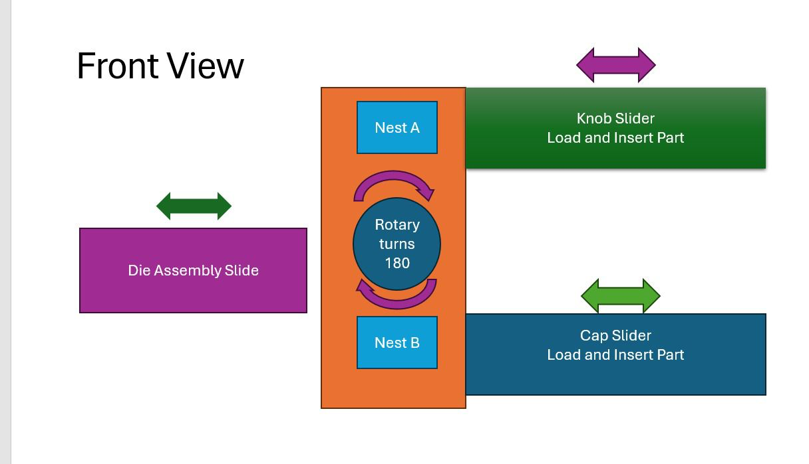
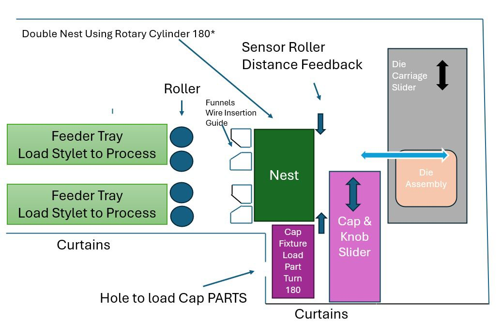
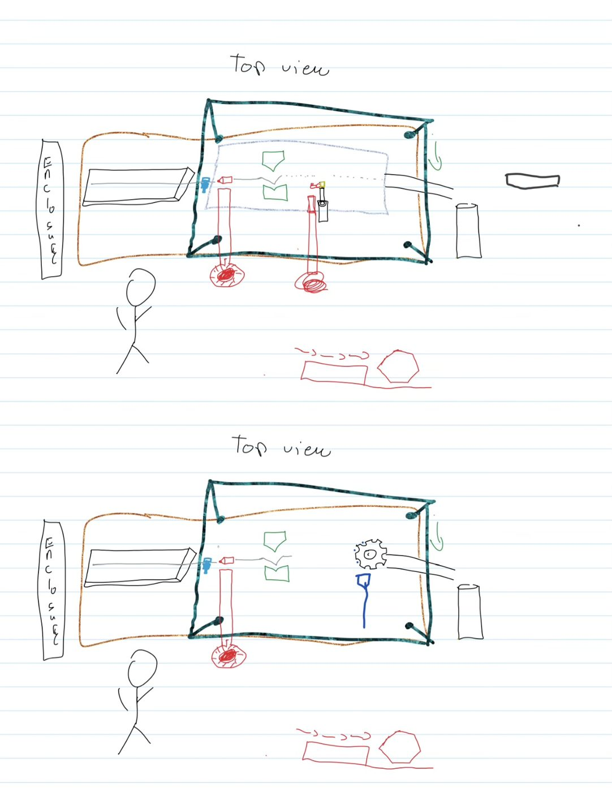
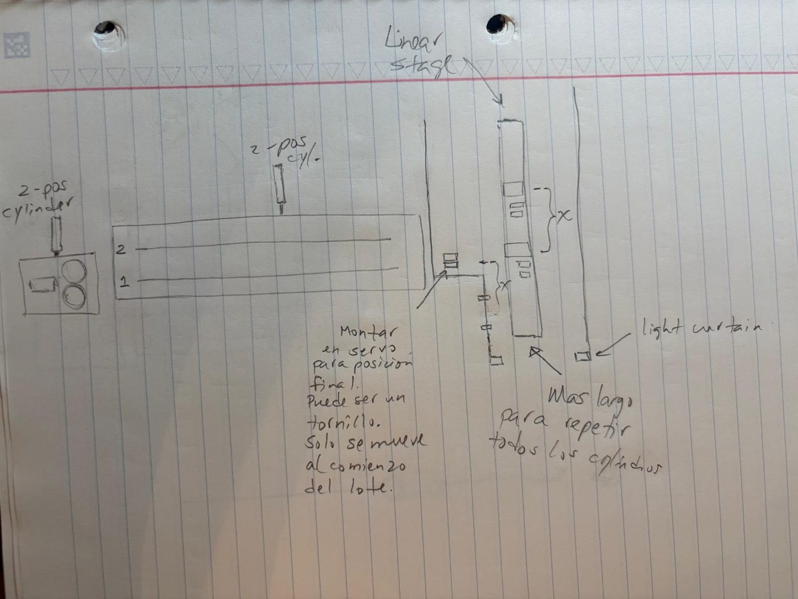
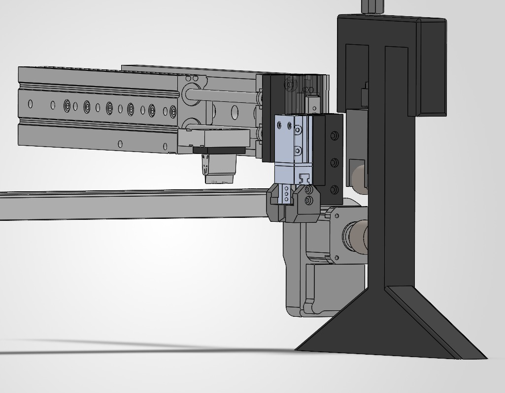
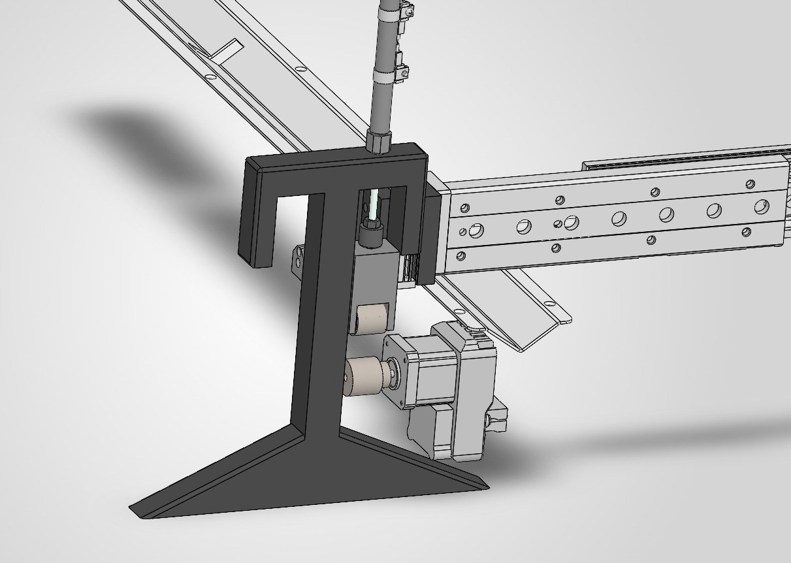

Propuesta técnica final, presentada en mayo de 2026. Pasó del qué al cómo: opciones de diseño, restricciones, componentes y el diseño seleccionado.
Antes de elegir, el grupo planteó tres alternativas.
Alternativa A
Un solo nest con dos bandejas alimentadoras. El operador carga los stylets a mano en cada ciclo.
Alternativa B
Un gripper toma el stylet y lo lleva al final del recorrido, donde lo suelta en un chute que lo guía por gravedad a un contenedor. Se identificó en la lluvia de ideas pero no se desarrolló más.
Alternativa C
Una etapa lineal con servo para posicionar al inicio del lote. Cilindros de dos posiciones indexan entre carriles. Cortina de luz de seguridad.




Diseño
Mantener o mejorar la consistencia de la calidad del producto.
Social y seguridad
Reducir los operadores de 3 a 1–2, con cortina de luz para proteger al operador.
PLC
Allen-Bradley CompactLogix 1769-L18ERM: 16 entradas y 16 salidas digitales a 24 VDC, EtherNet/IP, 2 ejes CIP Motion, 512 KB de memoria.

El resto de los componentes (HMI, fuente de poder, enclosure, sensores y neumática) se detallan en Diseño final.
El diseño elegido se modeló en 3D en SolidWorks por Miguel A. Arroyo Rodríguez.

